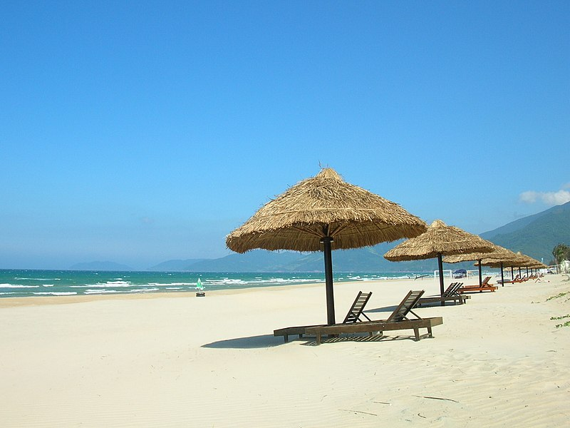

BIỂN CẢNH DƯƠNG

Cảnh Dương Beach Camp thuộc bãi biển Tân Cảnh Dương cách Huế 60km, nằm ở Huyện Phú Lộc, gần cảng Chân Mây và Laguna Resort. Tại đây các dịch vụ mới xây dựng và tân trang lại, Bãi biển được trang trí những xích đu, ghế đủ để bạn sống ảo và diễn sâu. Cảnh Dương Beach Camp nổi bật với dịch vụ thuê lều ngủ qua đêm, cho thuê dàn karaoke, đốt lửa trại… Cách đến đây như sau: Nếu các bạn đi từ Đà nẵng, một là bạn lựa chọn phượt đèo Hải Vân hoặc đi qua hầm. Nhưng mình nghĩ đi phượt thì nên đi đèo để khám phá được vẻ hùng vĩ của đèo. Sau khi qua đèo bạn chạy thẳng đường Lạc Long Quân, đến chỗ ngã 3 Chân Mây thì rẽ phải và chạy tiếp khoảng 30p. Khi nào thấy cái bảng như vậy là rẻ phải tiếp, chạy đến cuối đường là tới biển Cảnh dương. Mình chạy xe từ Đà nẵng đi đèo đến Cảnh dương khoảng 2,5h vì mình nghĩ chân, checkin ở Đèo nữa.
Nếu các bạn đi từ Huế vào thì chỉ cần men theo quốc lộ 1A qua hầm Phước Tượng, chạy khoảng 500m sẽ thấy tấm biển ” Laguna” lớn, rẽ trái vào hướng đi Laguna tầm 10km ngay chỗ ngã ba các bạn rẽ phải ( không đi vào Laguna ), các bạn đi tầm 3km nữa sẽ thấy tấm biển lớn ” Biển Tân Cảnh Dương”, rồi đi như chỉ dẫn bên trên.
VỊNH LĂNG CÔ
Có thể nói vịnh Lăng Cô được xem là nơi nghỉ dưỡng hoàn hảo với bức tranh phong cảnh êm đềm, đằm thắm. Vịnh Lăng Cô hãy còn hoang sơ và yên bình lắm, đó cũng chính là điểm nhấn đặc biệt của vịnh biển này.Nơi đây từng được đức vua Khải Định ở triều nhà Nguyễn cho xây dựng Hành cung Tịnh Viêm để cho nhà vua và hoàng hậu nghỉ mát vào mùa hè. Ven biển là làng chài nhỏ, nơi sinh sống của các ngư dân mộc mạc, hiền lành cùng với các dây rau muống biển bò trên vùng cát tím. Đó quả thật là một vùng đất lãng mạn, đầy quyến rũ.

Đến với vịnh Lăng Cô, du khách đừng nên bỏ qua việc hòa mình vào làn nước trong vắt, vùng vẫy rồi tham gia các trò chơi trên biển.Nếu đã tắm chán rồi, du khách có thể ngồi trên cồn cát, chiêm ngưỡng bầu trời trong vắt cùng với những con thuyền nhỏ trôi chênh vênh nơi ngoài khơi xa xa. Đó quả thật là một bức tranh hữu tình làm xao xuyến trái tim của du khách phương xa.
BẠCH MÃ VINTAGE

Bạch Mã Village nằm trong thôn Khe Su, xã Lộc Trì, huyện Phú Lộc và thuộc địa phận Vườn Quốc gia Bạch Mã. Nơi đây nằm cách trung tâm thành phố Huế khoảng 45km và cách trung tâm thành phố Đà Nẵng khoảng 60km.
Từ tháng 12 đến tháng 4 (mùa khô) được xem là thích hợp nhất để du lịch vườn quốc gia Bạch Mã, vào thời điểm này thời tiết khô ráo không có những cơn mưa dữ dội thích hợp cho việc di chuyển và đi lại.
Từ Cổng vườn bạn đi thẳng lên tới đỉnh Bạch Mã, Check-in Hải Vọng Đài - điểm du lịch đẹp nhất trong Vườn Quốc Gia, sau đó từ Hải Vọng Đài bạn bắt đầu trekking khám phá các điểm du lịch nổi tiếng trong vườn như Thác Đỗ Quyên, Ngũ Hồ, những đường mòn xuyên rừng để khám phá thảm thực vật phong phú của Rừng.